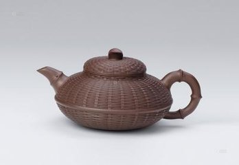

竹编艺术


竹编是一项古老的民间艺术，它源于明清时期，道光同治年间。四川崇州府(今成都崇州市)人张国正酷爱竹编，在学习总结丰富的崇州民间竹编艺术的基础上，张国正将竹篾越划越薄、竹丝越劈越细，器具编织得越来越精致。渐渐地，竹丝细得没有了骨力，难以自己成型，张国正就选用了瓷器、漆器来作为底胎，让竹编依附在底胎上。由此竹编技艺从无胎成型进入了有胎依附的阶段。瓷胎竹编的前身--有胎竹编诞生了。当时这种纯手工制作的精美艺术品，多作为贡品供皇室享用。瓷胎竹编以其"精选料、特细丝、紧贴胎、密藏头、五彩丝"等技术特色在众多民间工艺中独树一帜。细竹编的出现，特别是有胎竹编的出现，使竹编从单纯的实用进入到实用与观赏相结合的新境界，步入了工艺美术的行列。张国正的创新得到了各界的重视，他制作的漆胎饭盒、烟盒、帽筒等作为贡品呈进了宫中，还有产品参加巴拿马博览会并获得银奖。张国正也因进贡有功被御赐"五品军工"。光绪年间，四川道台周孝怀在劝业局下设立细篾科，聘请张国正担任教师，招收学生，讲授有胎竹编技艺。